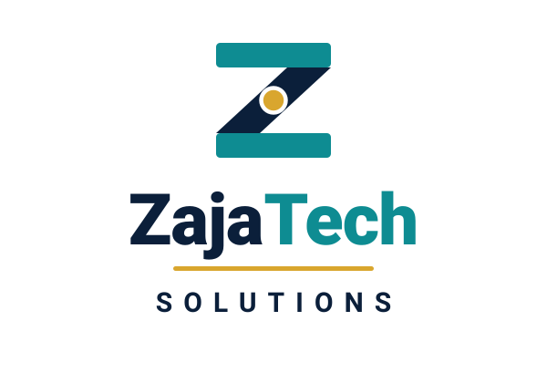

IT help desk and device support
Practical help when computers, phones, printers, and accounts stop working.
Learn more about it help desk and device supportIT support, networking, and cloud
ZajaTech Solutions provides IT support for households and individuals, small businesses, and larger organizations that need contract IT help. Remote support is available worldwide, with on-site support in the Palatine and Northwest suburbs of Illinois.

Eight service areas that follow the same method: understand the problem, make careful changes, and write down what was done.
Practical help when computers, phones, printers, and accounts stop working.
Learn more about it help desk and device supportSetting up and supporting Microsoft 365 for individuals and teams.
Learn more about microsoft 365Reliable home and office networks, planned and documented.
Learn more about networking and wi-fiCloud accounts and backups that are organized and easy to understand.
Learn more about cloud and backup servicesSetup, care, and documentation for Windows and Linux servers.
Learn more about windows and linux server supportMaking sure the right people have the right access.
Learn more about identity and access managementPractical settings that reduce everyday risk.
Learn more about security configuration and access controlsIT professionals for larger organizations that need contract help.
Learn more about contract it staffingGood IT work is mostly good habits. ZajaTech listens first, changes one thing at a time, and leaves clear notes so nothing about a setup stays a mystery.
Describe what is happening and what you need.